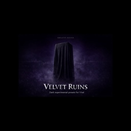

Flagship preset pack
VELVET RUINS
Presets for Vital spectral synth.
A dark Vital preset set built for spectral movement, worn melodic tone, and cinematic atmosphere that feels aged without turning muddy.
Demo
Audio slot ready
Drop the VELVET RUINS demo file here next. This block is ready for an inline player.
Format
Vital presets
Focus
Dark melody and spectral motion
Best for
Cinematic tension and ambient scoring
Sound character
VELVET RUINS is built for patches that carry mood immediately. The pack leans into soft spectral smear, damaged harmonic edges, and motion that stays musical instead of noisy.
What you get
- Dark melodic presets with worn harmonic tone.
- Spectral textures that stay controlled in a mix.
- Atmospheric layers for tension and ambient scoring.